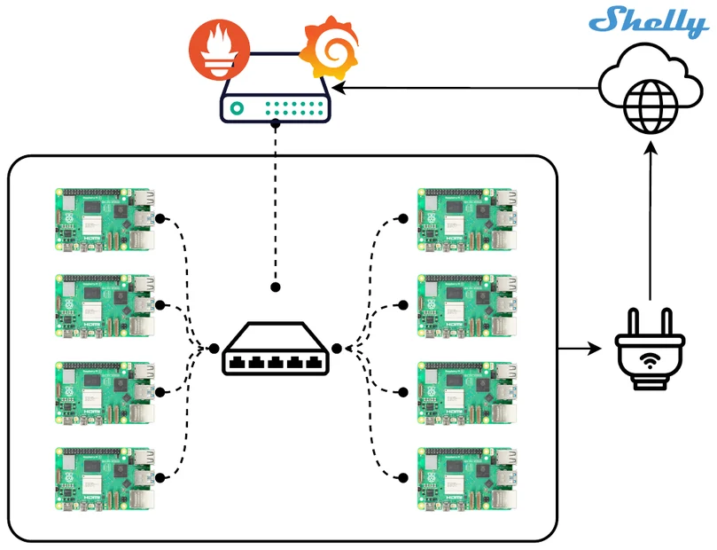
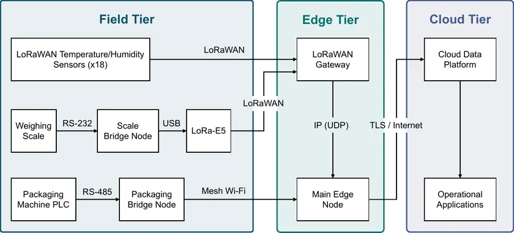
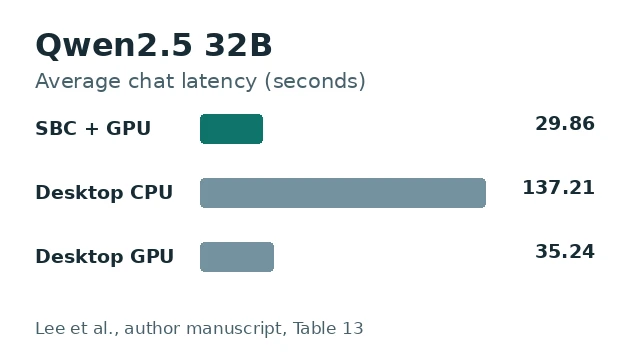

Yoonseok Kang
M.S. Researcher, Chung-Ang University
I study how robots can reuse experience, generalize to new goals, and adapt from limited data.
I work with Dongchul Park in the Data Computing Systems Lab. My earlier work spans distributed search and industrial data systems.
Papers


Optimizing Indexing and Search Performance of Elasticsearch for Large-Scale Log Data
Journal of Platform Technology2025

Characterization of Distributed Search on Resource-Constrained Edge Clusters
IEEE Transactions on Parallel and Distributed Systems2026JCR Q1, Top 13%(under review)

Establishing Reliable IIoT Infrastructure in an SME Factory: LoRaWAN Interference Diagnosis and Legacy Equipment Integration
Computers in Industry2026JCR Q1, Top 9%(under review)

New Possibilities: Integrating an SBC With an eGPU for Small- to Medium-Scale LLMs
IEEE Access2026JCR Q2, Top 35%
Search Performance Optimization of Log Data on Elasticsearch
Korea Computer Congress2025
HAT: Hadoop Adaptive Tuning via Binary Tree Scheduler for Heterogeneous Edge Clusters
Future Generation Computer Systems2026JCR Q1, Top 12%(under review)
Radar: A comprehensive self-tuning Hadoop framework for low power clusters
Scientific Reports2026JCR Q1, Top 14%(under review)
TIDE: An Efficient Distributed LLM Prefill System on Low Cost SBC Clusters
IEEE Transactions on Parallel and Distributed Systems2026JCR Q1, Top 13%(under review)
PiPP: A Pipeline-Parallel Distributed LLM Inference Platform for Low Cost SBC Clusters
IEEE Transactions on Parallel and Distributed Systems2026JCR Q1, Top 13%(under review)
Industry experience
TERO
Owner and Data Infrastructure Engineer
Build edge-to-cloud monitoring systems for small manufacturers.
ON LOG
Project Lead with OnGoing
Led a factory IoT rollout that connected wireless sensors and legacy equipment.
Sprout for SeSAC
Project Manager
Led development and deployment of an education management platform.
Patents and software
Lab recordsKorean patent applications
- Distributed LLM Prefill
- Filed
10-2026-0217817 - Distributed LLM Inference on SBC Clusters
- Filed
10-2026-0165843 - Hadoop Scheduling with a Binary Tree
- Filed
10-2026-0095501 - Distributed Search on Edge Clusters
- Filed
10-2026-0092836 - Self-Tuning Hadoop for Low-Power Clusters
- Filed
10-2025-0110496
Korean software registrations
- Pipeline-Parallel LLM Inference on SBC Clusters
- Copyright
C-2026-058572 - Software asset
ASSET_0016589 - Distributed Search on Edge Clusters
- Copyright
C-2026-058729 - Software asset
ASSET_0016504 - Hadoop Scheduling with a Binary Tree
- Copyright
C-2026-058727 - Software asset
ASSET_0016558 - Self-Tuning Hadoop for Low-Power Clusters
- Copyright
C-2025-041771 - Software asset
ASSET_0015143